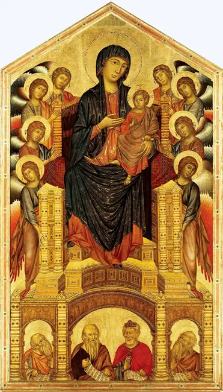
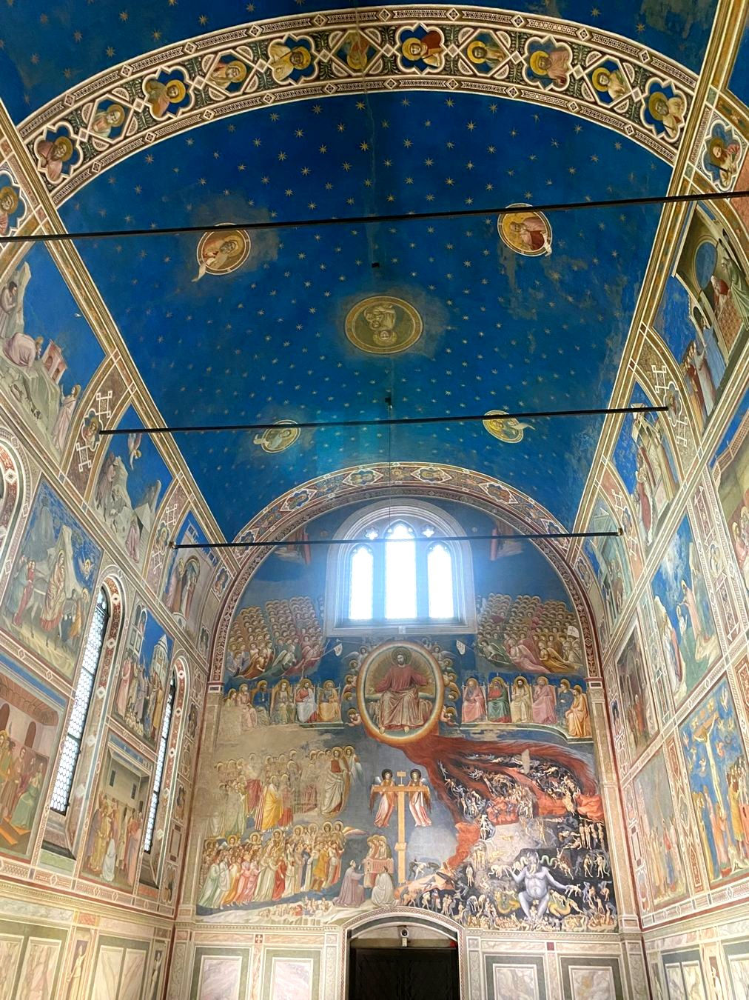
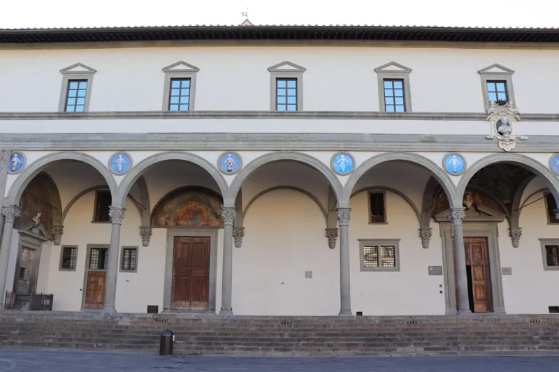
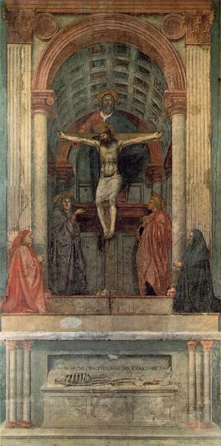
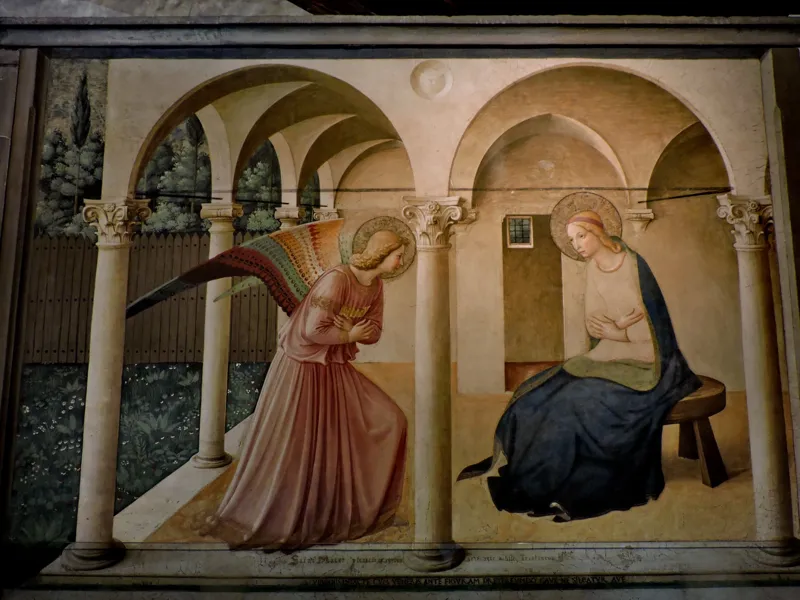
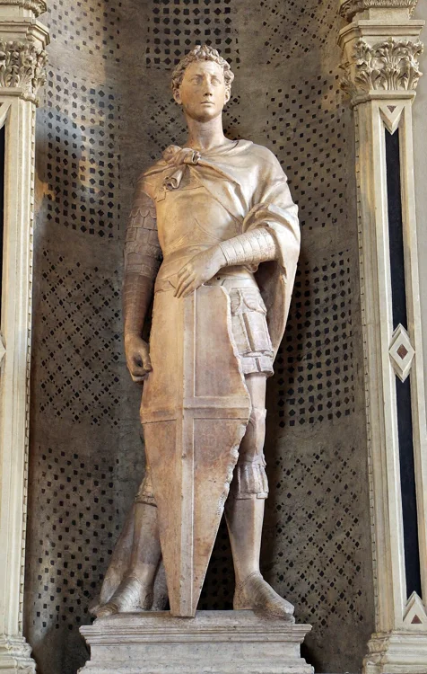

Peinture · À l’aube de la Renaissance
Cimabue
Vers 1240 – vers 1302Il donne plus de volume et d'expression aux figures de la tradition byzantine.
Découvrir ses œuvres →Apprendre à voir, oser regarder.
Derrière chaque œuvre, un regard nouveau. Découvrez les peintres, sculpteurs et architectes qui ont transformé notre manière de représenter le monde.

Il donne plus de volume et d'expression aux figures de la tradition byzantine.
Découvrir ses œuvres →
Il donne aux personnages un poids, une présence et des émotions plus humaines.
Découvrir ses œuvres →
Il réinvente l'espace architectural grâce aux proportions, aux modules et à l'harmonie.
Découvrir ses monuments →
Il révolutionne la peinture par la perspective, le volume et la présence réelle des personnages.
Découvrir ses œuvres →
Il unit la spiritualité, la lumière et les innovations de la Renaissance.
Découvrir ses œuvres →
Il renouvelle le relief, le mouvement et l'expression des figures sculptées.
Découvrir ses œuvres →